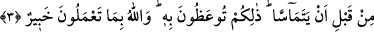

tevbeye teşvik ettiği görülmektedir.
3. Kadınlardan zıhar ile ayrılmak isteyip de sonra söylediklerinden dönenler
karılarıyla temas etmeden önce bir köleyi hürriyete kavuşturmaları gerekir. Size
öğütlenen budur. Allah, yaptıklarınızdan haberi olandır.
“Kadınlardan zıhar ile ayrılmak isteyip de sonra söylediklerinden dönenler…”
Bu âyette de geçtiği üzere “îlâ” harfi ile lam harfi, “De ki, ortak koştuklarından
hakka iletecek olan var mı? De ki: Hakka Allah iletir.” (Yunus, 10/35) âyetinde
olduğu gibi sık sık birbirini takip ederler. Mânâ şöyle olur: “Bu çirkin sözü söyleyip de
sonra bu sözle yaptıkları zıhar sebebiyle yitirdikleri kadınlarından yararlanmaya,
söylediklerini düzelterek ve telâfî ederek dönmek isteyenler…” Nitekim Arapların
“Yağmur bozduğuna döndü” yâni “bozduğunu düzeltti” sözü de bu kabildendir.
Âyet-i kerimede “sonra söylediklerinden dönenler” yâni “yitirdikleri karılarından
faydalanmaya dönenler” demektir. Burada sebep, müsebbebin yâni sebep olunan şeyin
yerine zikredilmiştir. Zira bir şeye dönmek, onu düzeltmenin ve ona ulaşmanın
sebeplerindendir. Dolayısıyla burada mecaz-ı mürsel sözkonusu olur.
İbnü’ş-Şeyh demiştir ki: Dönüş, iki mânâda kullanılır. Birincisi önceden üzerinde
bulunup da bırakmış olduğu şeye dönmek ki bu ayrılmış olduğu şeye dönmek
mânâsınadır. İkincisi ise daha önce üzerinde bulunmadığı bir şeye dönmektir. Bu
mânâdaki dönmek, ayrıldığı şeye dönüş olmasını gerektirmez. Bu dönüş, elde etmeye ve
ulaşmaya sebep olan dönüştür ki bu, mutlak bir şeye dönüştür. Bu durumda mânâ şöyle
olur: “Sonra söylediklerini telâfî etmeye, düzeltmeye ve helâl iken kadınlarının
kendilerine haram olmasından dolayı hayatlarını alt üst eden bu sıkıntıyı gidermeğe
dönenler.” Âyeti şöyle anlamak da mümkündür: “Zıhar sözü ile kendilerine haram
kılmış oldukları kadınlarından faydalanmağa dönmek isteyenler...”
“Karılarıyla temas etmeden önce” yâni zıhar yapan erkek ve zıhar yapılan kadından
her biri diğerinden cinsel ilişki, öpme, dokunma, cinsel organa şehvetle bakma gibi bir
birinden faydalanmadan önce “bir köleyi hürriyetine kavuşturmaları gerekir.” Çünkü
âyette geçen temas kelimesi saydığımız bu fiillerin tamamını içine alır. Şâyet saydığımız
bu fiillerden herhangi birini keffâret vermeden önce işleyecek olursa, haram işlemiş
olduğundan erkeğin istiğfar etmesi gerekir. Keffâret ödemedikçe bir daha aynı hareketi
yapamaz. Âlimler, o kişinin verdiği ilk keffâretten başka bir şeyle yükümlü olmadığını
ittifakla söylemişlerdir. Keffâret ödemek durumundaki erkek, kölenin bir bölümünü
hürriyete kavuşturur sonra da zıhar yaptığı karısına şehvetle dokunursa İmam Ebû